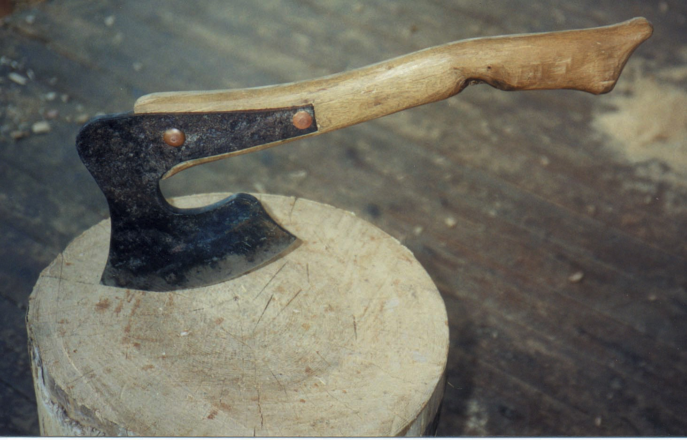

PHOTO: BILL COPERTHWAITE
This broadaxe for hewing logs into beams is unique because most any independent homesteader can forge this design with just a little blacksmith experience. This design allows the maker to connect the blade to the side of the handle instead of having to forge an eye like those found on conventional axes.